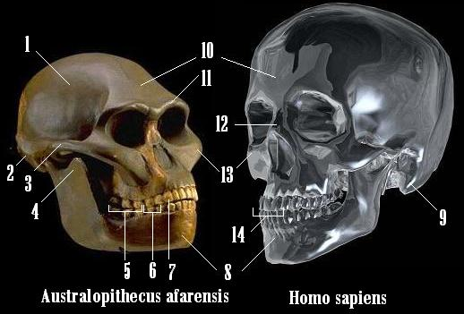
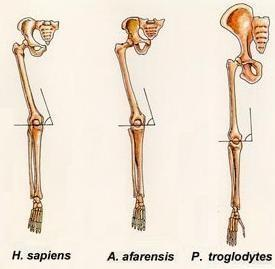
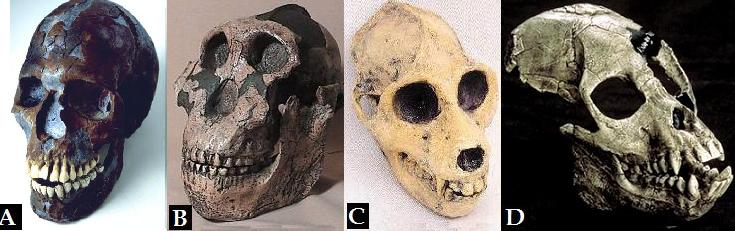

Es imposible hablar de la evolución humana sin mencionar a los australopitecos. Estos simios de hace cuatro millones de años caminaron erguidos como nosotros pero mantenían un cerebro de tamaño similar al de los chimpancés. Sin embargo, su postura bípeda fue la chispa que impulsó una serie de cambios evolutivos que sin proponérselo desembocaría en nosotros. Si bien hoy se considera que la marcha en dos pies apareció antes que los australopitecos, quizás hace 7 millones de años con el Sahelantrhopus.
El siguiente taller se propone que los lectores puedan conocer más de cerca a los australopitecos, o para utilizar la imprecisa expresión popular, a “los eslabones perdidos”, que ya no están perdidos pues se han encontrado varios de ellos en aras de comprender nuestros orígenes.

Lee con atención el siguiente texto:
Solo hasta 1925 se descubrió el primer fósil de un australopiteco. Este primer fósil consistía en el cráneo de un infante que mostraba un rostro y dentadura simiesca, pero el molde del cerebro le mostró a Raymond Dart, su descubridor que no era un simple simio, y que su encéfalo tenía rasgos anatómicos más cercanos a los nuestros que a los de un simio. Dart decidió bautizar esta nueva especie como Australopithecus africanus (El término australopitheco proviene de los términos griegos Austral = Del sur y Pithecus = simio) El fósil descrito por Dart se conoce como el Niño de Taung, nombre de la región minera sudafricana de la que le llevaron el fósil. Sin embargo, el descubrimiento de Dart no fue acogido por la comunidad científica de su época ya que esta consideraba que la evolución de un cerebro grande fue la característica que propulsó la evolución del hombre. Los colegas de Dart daban más importancia a fósiles más recientes y de gran cerebro como el Homo erectus de Asia. Nuevos descubrimientos en África probarían que la postura bípeda precedió a la evolución de un cerebro grande y que estos “chimpancés de andar humano” tenían un lugar en nuestro árbol genealógico.
-
Australopithecus quiere decir:
Fósil de mono.
Mono del Sur.
Simio australiano.
Eslabón perdido.
-
El término “fósil” hace referencia exactamente a:
Cualquier roca prehistórica.
Los restos de animales prehistóricos.
Restos preservados de un organismo, o huellas de su actividad, provenientes de miles a millones de años.
Un ser vivo primitivo.
-
El mérito de Raymond Dart, descubridor de “el niño de Taung”, fue
Ser el primero en afirmar que venimos del mono.
Reconocer el fósil de Taung como un primate más próximo a los humanos que a los monos antropomorfos (chimpancés, gorilas y orangutanes)
Descubrir un cerebro humano en un cráneo de chimpancé.
Afirmar que los australopitecos tenían cerebros de tamaño similar a los de los humanos.
-
El descubrimiento de los australopitecos supuso una “revolución científica” porque:
No se esperaba encontrar fósiles de homínidos tan antiguos
Un aumento en el tamaño del cerebro dejaba de ser ” lo que nos hizo humanos”
El eslabón perdido era bípedo y no inteligente
La cuna de la humanidad estaba en África y no en Asia
Son correctas: A. 1 y 2 son correctas. B. 2 y 4 son correctas. C. 3 y 4 son correctas. D. Todas son correctas.
Observa la siguiente imagen

-
Según el anterior mapa la opción falsa es:
Los A. africanus habitaron principalmente el sur de África.
La especie A. bahrelgahzali fue hallado al oriente de África.
Los australopitecos habitaron el continente africano.
Los restos fósiles de los parántropos han sido hallados en África.
Los partes de un australopiteco (al igual que para todos los vertebrados) que mejor fosilizan son sus partes óseas y sus dientes. Aparte de estos se han hallado pisadas fósiles y el molde del cerebro formado dentro de un cráneo, en el caso del niño de Taung. Dado que los paleontólogos tienen que vérselas principalmente con huesos y dientes es importante que recordemos un poco de la anatomía ósea del cráneo. En la próxima ilustración verás el cráneo de un Australopithecus afarensis y el de un humano moderno, consulta los nombres de las estructuras señaladas mientras respondes las siguientes preguntas
-
Los huesos señalados con los números 1, 2, 9 y 10 respectivamente son:
Frontal, occipital, temporal y parietal.
Parietal, occipital, temporal y frontal.
Occipital, parietal, temporal y frontal.
Temporal, occipital, occipital y frontal.
-
Los dientes incisivos, caninos, premolares y molares están señalados respectivamente con los números:
14, 7, 6 y 5.
7, 14, 6 y 5.
14, 7, 5 y 6.
7, 14, 5 y 6.
-
El torus supraorbitario (supra = encima de) está señalado con el número:
10.
3.
12.
11.
-
Según la lectura se puede concluir que los paleontólogos estudian:
Los dientes y huesos de los animales.
La anatomía de los australopitecos.
Los organismos que vivieron hace miles a millones de años
La anatomía de los vertebrados.
-
Los restos óseos de los fósiles le permiten al paleontólogo saber que tipo de vida llevaba el animal en vida, su tipo de alimentación y forma de desplazamiento. Para esto último hay pistas en la anatomía del animal, no solo en sus piernas, sino también en su cadera, columna vertebral y en su cráneo. Observa y analiza con atención la siguiente imagen y responde la siguiente pregunta.

¿Qué característica craneal nos indica la postura en la que camina un simio?
La posición del foramen mágnum, el agujero por el cual sale la médula espinal, pues la orientación hacía atrás del foramen mágnum de los chimpancés indica que estos son cuadrúpedos y la orientación hacía abajo del foramen mágnum de los australopitecinos indica que estos simios eran bípedos.
Ninguna. Ya que esto solo se puede analizar conociendo el esqueleto de la extremidad inferior.
Ninguna. Ya que la postura de un vertebrado extinto solo se puede saber teniendo el esqueleto completo.
El tamaño del canino. Ya que los primates bípedos tienen caninos pequeños, y los primates cuadrúpedos tienen caninos grandes.
-
Un cambio significativo en la evolución humana fue la disposición de los dientes en la mandíbula. Observa con atención la siguiente imagen.

Ahora lee con atención las siguientes conclusiones:
En los grandes simios, como el chimpancé y el gorila, la serie de dientes premolares y molares del maxilar superior son paralelos,
En los humanos la serie de dientes premolares y molares del maxilar superior es parabólica.
En los australopitecos la serie de dientes premolares y molares del maxilar superior es intermedia entre la del chimpancé y el humano moderno.
Son correctas:
1 y 2.
2 y 3.
1 y 3.
Todas son verdaderas
-
Al observar la gráfica también se hace evidente que:
El tamaño del canino es mayor en el humano moderno que en el Pan troglodytes (Chimpancé)
En los australopitecos el tamaño del canino se había reducido.
El canino de los australopitecos tenía forma cónica como en los chimpancés.
El canino de los chimpancés es de forma espatulaza (similar a una espátula) al igual que el de los australopitecos.
-
Cuando nuestros antepasados pasaron de caminar en cuatro a patas a solo dos se dieron cambios en la forma de sus caderas. Así pues podemos ver en la actualidad que cuando el hombre camina transmite el peso del cuerpo por la columna vertebral al sacro y de allí a los coxales hasta las cabezas de los dos fémures (Ubique los huesos en la gráfica inmediatamente en seguida) Para disminuir la tensión producida en la barra ósea que va desde la articulación sacroilíaca a la coxofemoral el proceso evolutivo ha acercado las dos articulaciones. Observa y analiza la siguiente gráfica que muestra las caderas de Australopithecus africanus, Australopithecus afarensis, del chimpancé y de los humanos actuales.

Según esta información se puede decir correctamente que
La cadera de los australopitecinos es más parecida a la de los humanos, que a la de los chimpancés.
El acercamiento de la articulación sacroilíaca y coxofemoral en los australopitecos indican que ellos eran bípedos.
Los australopitecos eran tan solo chimpancés.
El desplazamiento de los australopitecos era similar al de los chimpancés.
Son correctas: A. 1 & 2. B. 2 & 3. C. 1 & 4. D. 2 & 4.
-
El esqueleto postcraneal de los australopitecos nos ayuda a entender como se desplazaban estos primates. Observa con atención la siguiente imagen y responde
Teniendo en cuenta la imagen se puede concluir correctamente todo excepto que:
En los primates cuadrúpedos como los chimpancés el fémur forma un ángulo de 90º con la superficie articular de la tibia.
Los australopitecos tienen el ángulo formado por el fémur con la superficie articular de la tibia más cerrado. Similar a nosotros.
En los primates bípedos el ángulo formado por el fémur con la superficie articular de la tibia es inferior a 90º.
La forma de la cadera del chimpancé es similar a la del humano.
-
Los creacionistas afirman que los australopitecos son tan solo simios, no muy diferentes a los chimpancés de hoy. Según las cuatro gráficas anteriores se les puede responder a los creacionistas que:
Si bien los australopitecos y chimpancés tienen un tamaño de cerebro similar varían considerablemente en varios aspectos de la morfología del cráneo.
La postura en la que caminaban los australopitecos es con toda probabilidad bípeda, lo cual los acerca más a nosotros.
La forma de los caninos de los australopitecos era más similar a la nuestra que a la de los chimpancés.
Todas las anteriores.
-
Según el gráfico es correcto afirmar que
El Australopithecus ramidus es la especie más reciente de su género.
Más de una especie de homínidos fueron contemporáneas hace 1.8 millones de años.
El Australopithecus africanus es más antiguo que el Australopithecus afarensis
El Australopithecus garhi es la especie que abarca un mayor lapso de tiempo en el registro fósil.
-
Según la gráfica se puede decir que los australopitecos
Se extinguieron sin dejar descendientes.
Dieron origen a dos linajes: el de humanos y el de los parántropos.
Perduraron hasta el Pleistoceno.
Se extinguieron iniciando el Plioceno.
-
Si pudieras viajar en una maquina del tiempo al África de hace 2‘800.000 años probablemente podrías encontrar
Solo especies de parántropos.
La primera especie del género humano, los últimos australopitecos y las primeras especies de parántropos.
La especie humana moderna.
Al Australopithecus anamensis
Lee con atención el siguiente texto:
Hace cerca de 2,8 millones de años, el planeta Tierra contaba con un único casquete polar, el antártico. Pero a partir de ese momento, se produjo un incremento de la inestabilidad climática que determinó un enfriamiento paulatino en el hemisferio norte. Hace alrededor de los 2,4 millones de años hubo una crisis climática global asociada a la aparición de un segundo casquete polar, el ártico.
Este cambio climático produjo un gradual enfriamiento y aridificación de los ecosistemas africanos y pudo ser el responsable de la desaparición de Australopithecus africanus, a la vez que propició la selección de nuevas formas de homínido. Situaciones similares, cambios ambientales que eliminan a unas especies pero favorecen la aparición de otras nuevas, salpican la historia de la vida en nuestro planeta, y es cuestión de azar el encontrarse entre los beneficiarios o entre los damnificados de tales acontecimientos.
Los dos nuevos tipos de homínidos que surgieron de la crisis de finales del Plioceno, convivieron durante más de un millón y medio de años a lo largo del este de África. Hoy día sus fósiles se encuentran diseminados en una vasta región que se extiende desde Etiopía hasta Sudáfrica. Pero ni su modo de vida, ni sus adaptaciones, ni su destino fueron los mismos. Una de estas formas fue la representada por los parántropos y la otra fue la de los humanos.
Los parántropos fueron un tipo de homínido especializado en el consumo de productos vegetales coriáceos, propios de los medios abiertos y secos. Como consecuencia de esta adaptación alimentaria, sus aparatos masticadores se vieron modificados para realizar intensos esfuerzos masticatorios. Entre estas modificaciones destacan el aumento de tamaño de la superficie masticatoria de los molares y premolares, en relación a su peso corporal (técnicamente, megadoncia) Además, sus molares presentaban una gruesa capa de esmalte, sus mandíbulas eran espesas, muy anchas y altas, y sus caras anchas, largas y planas. Aparte de esta marcada especialización en el aparato masticador, los parántropos no mostraban diferencias significativas con los australopitecos, más antiguos y primitivos, ni en el tamaño del cuerpo ni, posiblemente, en el tamaño del cerebro.
Este tipo de homínido tuvo un relativo éxito adaptativo y a partir de la especie primigenia (Paranthropus aethiopicus ) aparecieron dos nuevas especies: Paranthropus robustus y Paranthropus boisei, el más especializado de los parátropos. Como consecuencia de su éxito adaptativo, los parátropos fueron capaces de desbordar su región de origen (el este de África) y se extendieron hasta el sur del continente. (Fragmento de “Claves de la evolución humana” de Juan Luis Arsuaga)
-
La gráfica que expone de forma correcta la aparición de los parántropos y humanos es

Hace 2.500.000 había sobre la Tierra:
Parántropos y humanos.
Solo el ártico como casquete polar.
Solo el antártico como casquete polar.
Dos casquetes polares.
-
Según la descripción que el texto hace de los parántropos el cráneo que corresponde a uno de estos es:
 -
Según la lectura se puede inferir que:
La evolución humana fue un proceso dirigido que tenía con fin último desembocar en la aparición del hombre moderno.
Las crisis climáticas han “jalonado” la historia evolutiva de los homínidos.
El cambio climático que tuvo lugar entre hace 2,8 y 2,4 millones de años no alteró el curso evolutivo de los homínidos.
Los parántropos se adaptaron a los ambientes residuales de bosques húmedos con abundantes frutas.
Volver a la sección Ciencias de los orígenes
Comentarios
Comments powered by Disqus